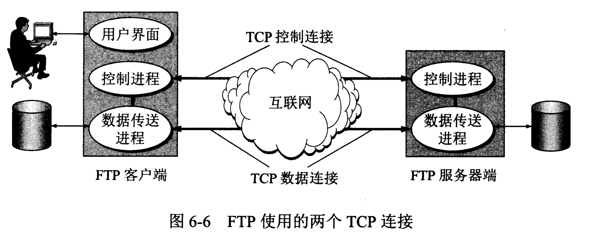

计算机网络/应用层/文件传送协议FTP
文件共享协议：
1. 复制整个文件的：FTP，TFTP
2. 联机访问：NFS
FTP
FTP使用客户服务器方式。一个FTP服务器进程可同时为多个客户提供服务。FTP的服务进程有两大部分组成：一个主进程，负责接受新的请求；另外有若干个从属进程，负责处理单个请求。

图中椭圆表示在系统中运行的进程。图中服务器端有两个从属进程：控制进程和数据传送进程。
在进行文件传输时，FTP的客户和服务器之间要建立两个并行的TCP连接：“控制连接”和“数据连接”。FTP客户所发出的传送请求，通过控制连接发送给服务器端的控制进程，但控制连接并不用来传送文件。实际传输文件的是“数据连接”。服务器端的控制进程在接收到FTP客户发送来的文件传输请求后就创建“数据传送进程”和“数据连接”，用来连接客户端和服务器端的数据传送进程。数据传送进程实际完成文件的传送，在传送完毕后关闭“数据传送连接”并结束运行。
NFS
FTP并非对所有的数据传输都是最佳的。例如，要在远地计算机的一个很大的文件末尾添加一行信息。若使用FTP则要先把文件传送过来，添加信息后在传送过去。网络文件系统NFS则采用另一种思路。NFS允许应用进程打开一个远地文件，并能在该文件的某一个特定的位置上好事读写数据。对于上述例子，NFS客户把要添加的数据和在文件后面写数据的请求一起发送到远地计算机，NFS服务器更新文件后返回应答信息。
TFTP
简单文件传送协议TFTP也使用客户服务器方式，但它使用UDP数据报。因此TFTP需要有自己的差错改正措施。TFTP只支持文件传输而不支持交互。TFTP没有一个庞大的命令集，没有列目录的功能，也不能对用户进行身份鉴别。TFTP的工作很像停止等待协议。
优点：
1. 可用于UDP环境
2. TFTP代码所占的内存小。这对较小的计算机或某些特殊用途的设备很重要。
参考文献：《计算机网络（第7版）》谢希仁著。